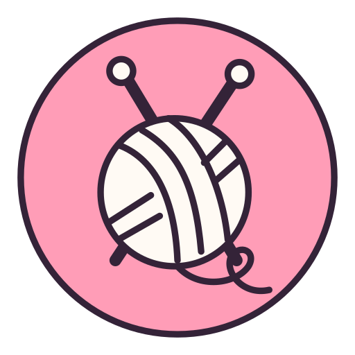
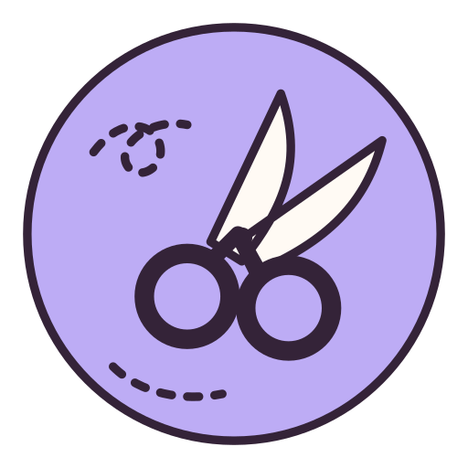

The Stitch Club
A little corner for knitting, crochet and sewing.
One row at at time.
Put the kettle on and cast on a few stitches. A simple scarf is a good project to pick up whenever you have a spare moment.

Little squares, big plans.
Make a granny square in your favorite colors. Keep going until you have enough for a cushion cover or a very colorful bag.
Too good to throw away
That little piece of fabric you've been saving? Turn it into a drawstring pouch for buttons, stitch markers or other tiny treasures.
